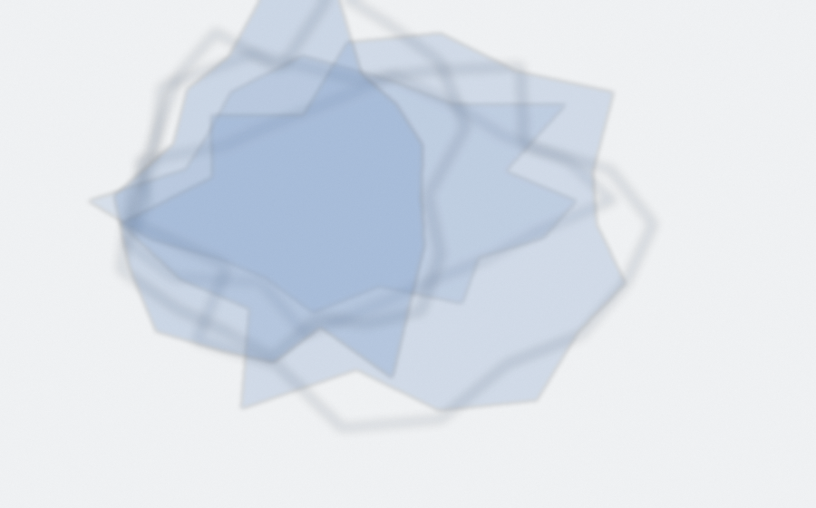
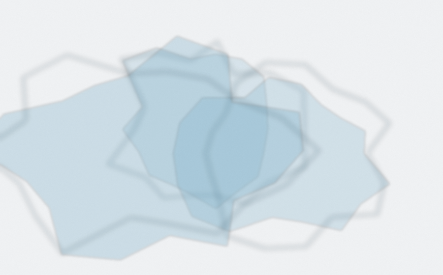
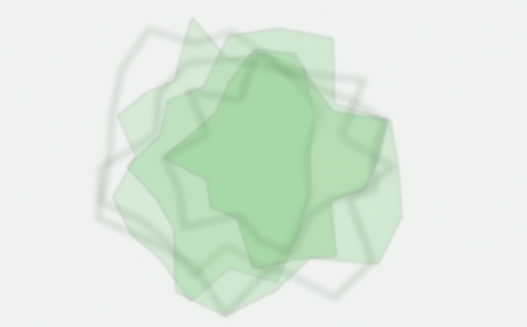
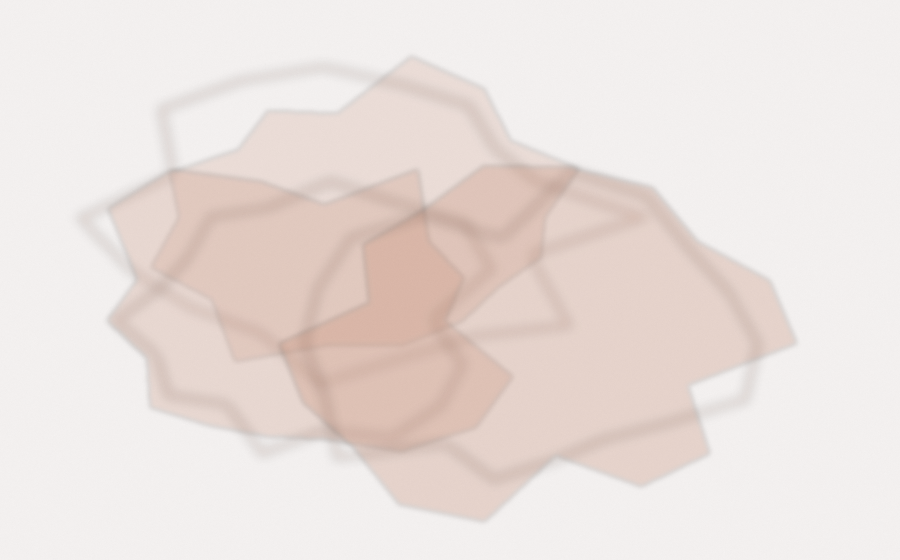
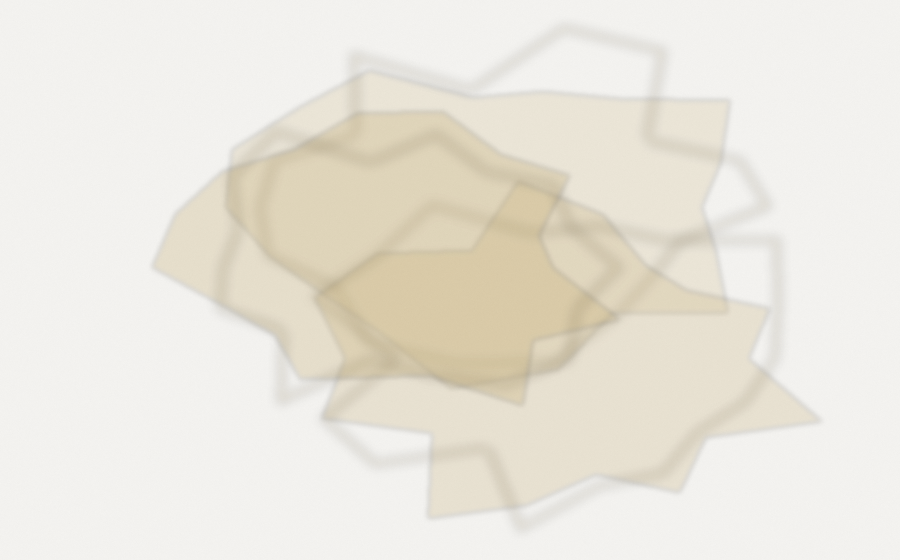
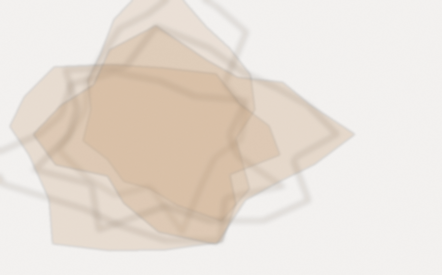
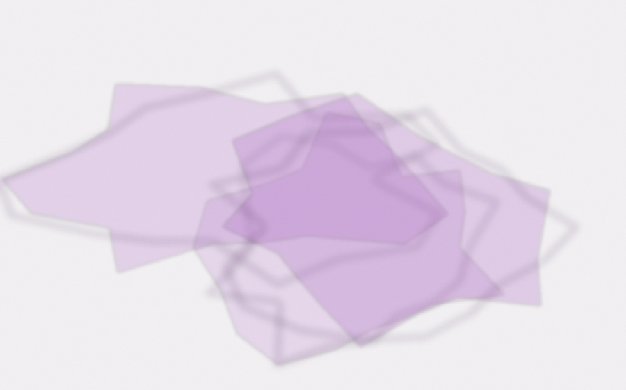
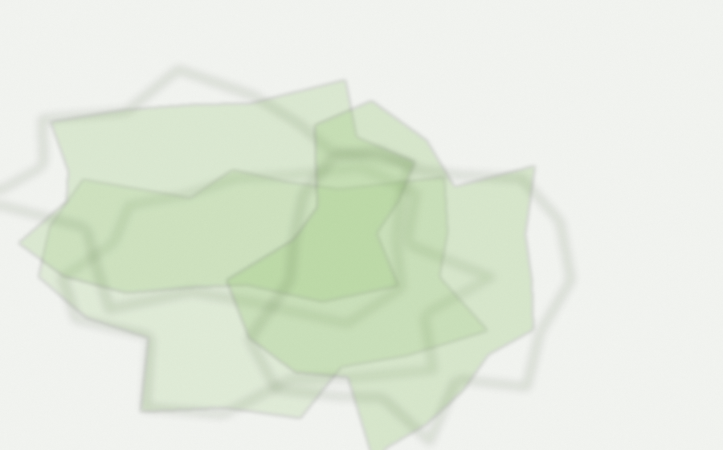
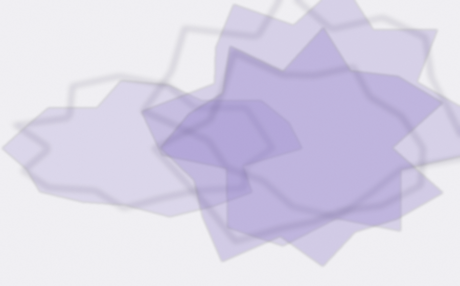

The nine washes
New pastel washes generated for the tables design, one hue per shelf. Same recipe as the first set (layered translucent blobs, pooled rims, paper grain) with more color so they survive being faded to 10%. Samples using them: A shelf art · B page background · C section wash · Main Page.

Shelf 1 · ink · header #dbe3ef

Shelf 2 · sky · header #dbe8ef

Shelf 3 · sage · header #dbefdb

Shelf 4 · clay · header #efe1db

Shelf 5 · ochre · header #efe9db

Shelf 6 · sepia · header #efe5db

Shelf 7 · plum · header #eadbef

Shelf 8 · moss · header #e3efdb

Shelf 9 · lavender · header #e0dbef
The first set, for comparison

First set, wash 1

First set, wash 2

First set, wash 3

First set, wash 4

First set, wash 5

First set, wash 6

First set, wash 7